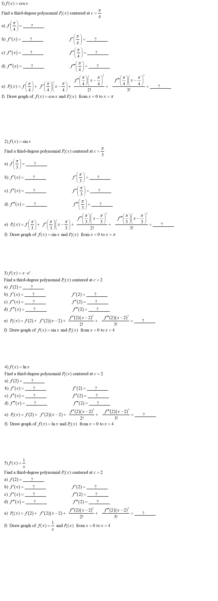

<!DOCTYPE html>

<html lang="en">
    <head>
        <meta charset="utf-8" />
        <title>Template For Answers Section 9.7</title>
        <style type="text/css">
            input:focus {background-color: beige; border-style: solid;border-color: #0026ff;border-width: 2px}
            input{background-color: beige;}
        </style> 
        <link rel="stylesheet" type="text/css" href="StyleSheet1.css">	
   

    <script type="text/javascript">

    </script>
    </head>
  <body onload="">
        
    </body>
</html>

    <span id="SectionSpan" style="font-size:34px">Calculus II  &nbsp;&nbsp;&nbsp;&nbsp;&nbsp;   
        Lesson 21: Taylor Polynomials </span> <br>
    <span id="DueDateSpan" style="font-size:20px;color: #ff6a00"></span><br> 
    <div style="font-size: 20px;color: blue;top: 80px;left: 400px;">
    </div>
    <br>

    <span style="font-size:24px">
      Objective: Find Taylor polynomial approximations of elementary functions.

   <br><br>      
   <a href="Calculus_II_Lesson21Rubric.pdf" target="Calculus_II_Lesson21Rubric"  style="margin-left:30px">Grading Rubric for Lesson 21</a> 

   <br><br>      
   <a href="CalculusCh9Sec7.pdf" target="CalculusCh9Sec7"  style="margin-left:30px">Notes for Lesson 21 </a> 

    </span> 


<div id="templateForAnswers" style="font-size: 24px;padding: 20px" onmousemove="recordMousePosition(event)"   onmousewheel="recordMousePosition(event)" onmousedown="recordMousePosition(event)" >

    <br><br>
<span style="font-size:32px; color:blue; margin-left:10px;  margin-right:450px" >Video Lecture </span> 

<input type="button" value="Calculus Main Page" style="margin-left:340px; width:auto; height:40px;font-size:32px"   
onclick="window.open('CalculusCourse.html','CalculusCourse.html')" />


<div id="CommonFormulas2333" style="display: ;top: 50px;left: 50px;height: 1000px;width: 1300px;overflow: scroll;background-color: #fff;border-style: solid;border-color: black;font-size:24px">
<br><br>

<iframe width="560" height="315" src="https://www.youtube.com/embed/sAz9jwNO9hA?si=MP5BOnlbezRRR_NV" title="YouTube video player" frameborder="0" allow="accelerometer; autoplay; clipboard-write; encrypted-media; gyroscope; picture-in-picture; web-share" referrerpolicy="strict-origin-when-cross-origin" allowfullscreen></iframe>


&nbsp;&nbsp;&nbsp;&nbsp;&nbsp;&nbsp;&nbsp;

<iframe width="560" height="315" src="https://www.youtube.com/embed/jIpC5nAuvrc?si=KxidmeKwMIc0xJVg" title="YouTube video player" frameborder="0" allow="accelerometer; autoplay; clipboard-write; encrypted-media; gyroscope; picture-in-picture; web-share" referrerpolicy="strict-origin-when-cross-origin" allowfullscreen></iframe>


<br><br>


<iframe width="560" height="315" src="https://www.youtube.com/embed/Jxm1b-Md45s?si=OLvtTN3CGW44fbDD" title="YouTube video player" frameborder="0" allow="accelerometer; autoplay; clipboard-write; encrypted-media; gyroscope; picture-in-picture; web-share" referrerpolicy="strict-origin-when-cross-origin" allowfullscreen></iframe>


&nbsp;&nbsp;&nbsp;&nbsp;&nbsp;&nbsp;&nbsp;

<iframe width="560" height="315" src="https://www.youtube.com/embed/EU3ZJd4E_9o?si=aAFB5i-sgkeD1hNQ" title="YouTube video player" frameborder="0" allow="accelerometer; autoplay; clipboard-write; encrypted-media; gyroscope; picture-in-picture; web-share" referrerpolicy="strict-origin-when-cross-origin" allowfullscreen></iframe>


<br><br>


<iframe width="560" height="315" src="https://www.youtube.com/embed/IpFduS6ttI8?si=4i71KFvkItO753fH" title="YouTube video player" frameborder="0" allow="accelerometer; autoplay; clipboard-write; encrypted-media; gyroscope; picture-in-picture; web-share" referrerpolicy="strict-origin-when-cross-origin" allowfullscreen></iframe>


&nbsp;&nbsp;&nbsp;&nbsp;&nbsp;&nbsp;&nbsp;

<iframe width="560" height="315" src="https://www.youtube.com/embed/Aa1LRvYvkiY?si=w-vdjW_OOXN90jkx" title="YouTube video player" frameborder="0" allow="accelerometer; autoplay; clipboard-write; encrypted-media; gyroscope; picture-in-picture; web-share" referrerpolicy="strict-origin-when-cross-origin" allowfullscreen></iframe>


<br><br>


<br><br><br><br><br><br><br><br><br><br><br><br>
</div>


<br><br><br><br>
<a href="https://www.geogebra.org/graphing?lang=en" target="VideoPlottingPoints22" style="font-size:28px; color:blue">2D Graphing Calculator</a>  
<br><br>
<a href="https://www.geogebra.org/3d?lang=en" target="VideoPlottingPoints33" style="font-size:28px; color:blue" >3D Graphing Calculator</a>  

<br><br>
<a href="https://taxestimate7788.github.io/TaxEstimate7788/TrigonometryFormulas.html
" target="TrigonometryFormulas" style="font-size:28px; color:blue" >Trigonometry Formulas</a>  
<br><br>
<a href="https://taxestimate7788.github.io/TaxEstimate7788/DerivativeFormulas.html
" target="DerivativeFormulas" style="font-size:28px; color:blue" >Derivative Formulas</a>  
<br><br>
<a href="https://taxestimate7788.github.io/TaxEstimate7788/IntegrationFormulas.html
" target="IntegrationFormulas" style="font-size:28px; color:blue" >IntegrationFormulas</a>  


<h2 style="color:black"> Note: You will need to have a TI-83 or TI-84 graphing calculator from now on.<br>
     You can go by the library (NE Campus) and check one out. It's free.<br> 
     You can keep the TI-84 calculator until the end of the semester.<br>
</h2>


<br><br><br>

    


<br><br><br><br><br><br><br><br><br><br><br><br>

    br><br><br><br><br>